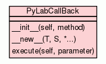

Class PyLabCallBack

Utility class to deal with callbacks.
This version of LabCallBack obey to the following pattern :
double callback(void *parameter, void *method)
That is to say that it returns a double and nothing else. Return 0.0
if you do not need to return anything...
USAGE :
First of all define the callback methods to be fired :
>>> def MyMethod(a_param):
... ret = a_param * 2.0
... return ret
Then we can create the callback :
>>> my_callback = PyLabCallBack(MyMethod)
And call it later on :
>>> print(my_callback.execute(25.0))
|
|
|
|
a new object with type S, a subtype of T
|
|
|
|
execute(self,
parameter)
Execute the method. |
|
|
|
Inherited from object:
__delattr__,
__format__,
__getattribute__,
__hash__,
__reduce__,
__reduce_ex__,
__repr__,
__setattr__,
__sizeof__,
__str__,
__subclasshook__
|
|
Inherited from object:
__class__
|
__init__(self,
method)
(Constructor)
|
|
Constructor.
- Parameters:
method (function) - The method to be executed. - Overrides:
object.__init__
|
- Returns: a new object with type S, a subtype of T
- Overrides:
object.__new__
|
|
Execute the method.
- Parameters:
parameter (object) - Parameter passed to the method (object of any kind).
|